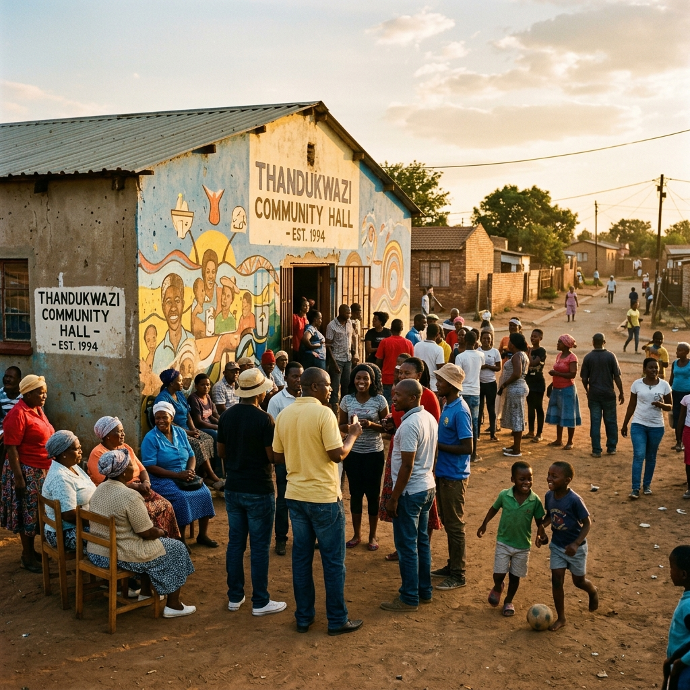
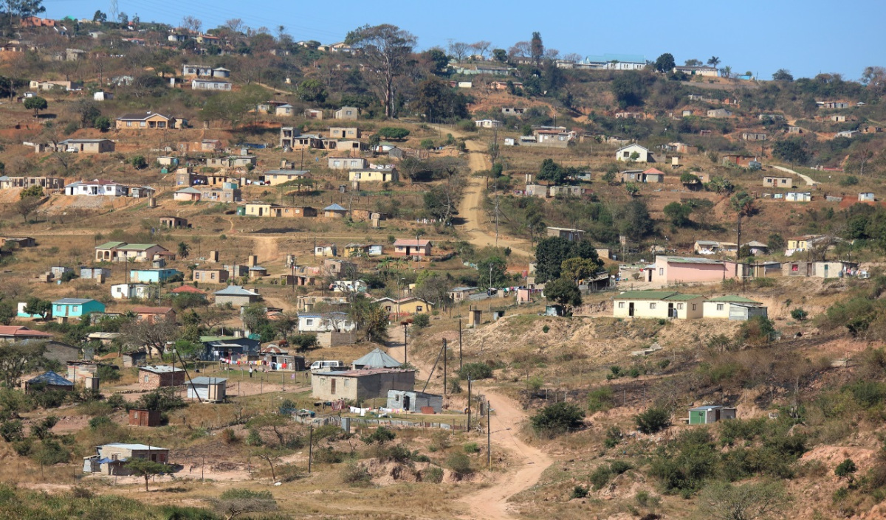
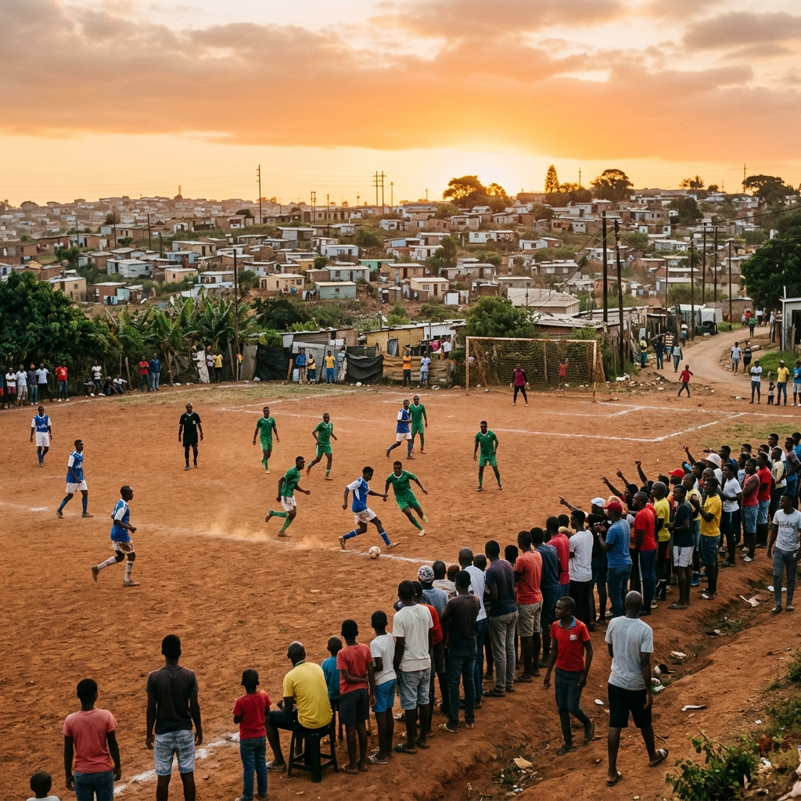
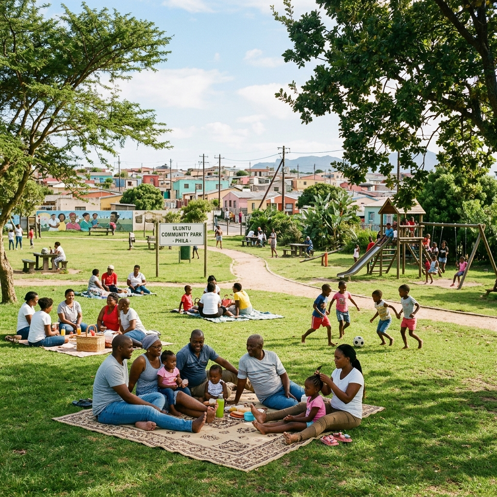
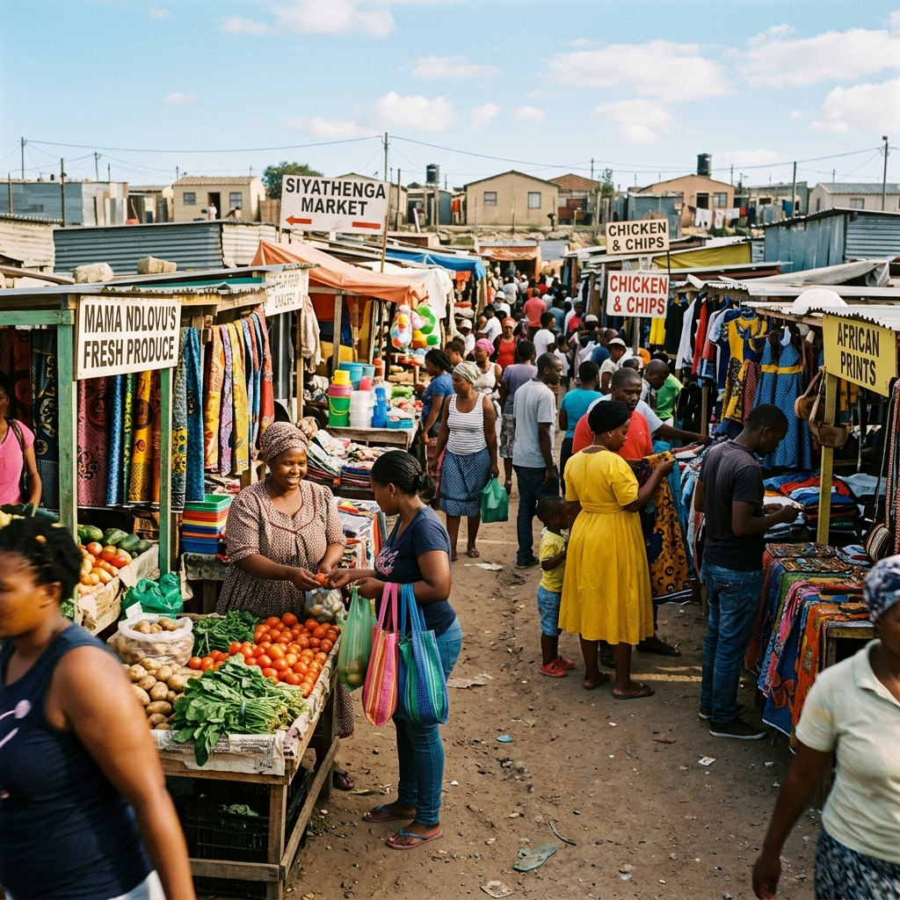
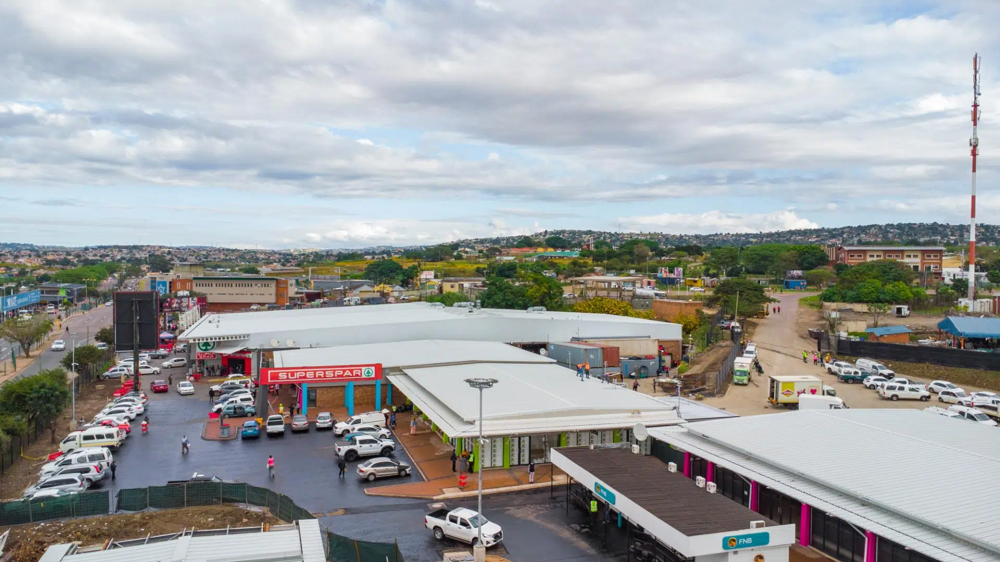
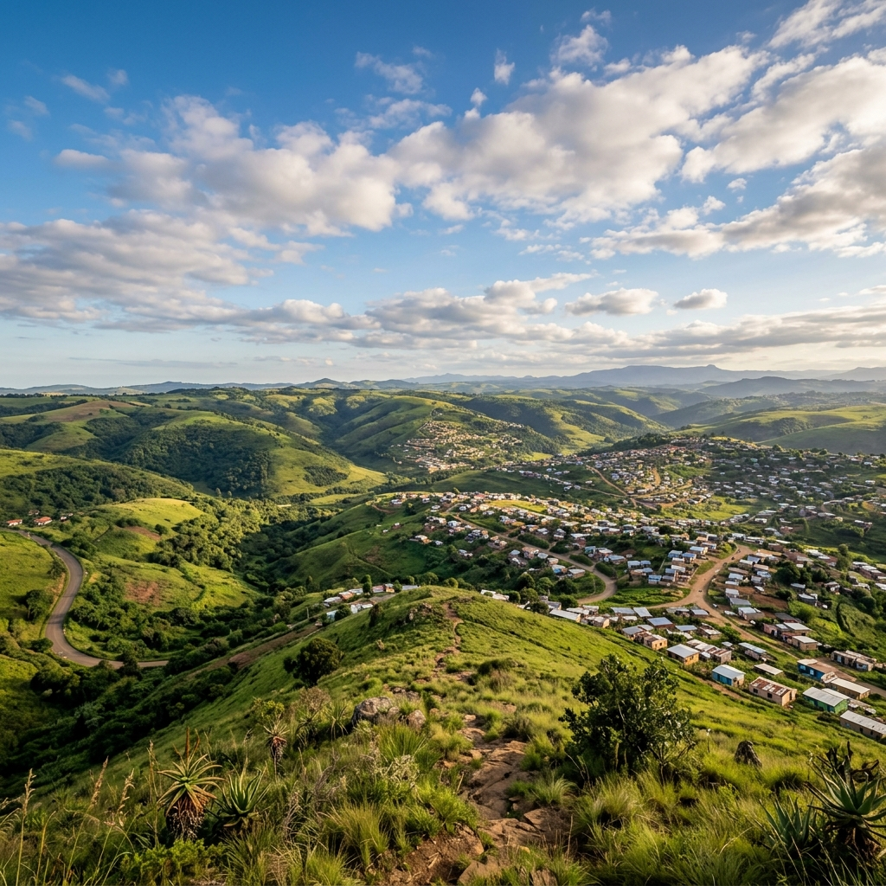

KwaMashu Community Hall
A gathering place for markets, celebrations, public meetings and community events throughout the year.
Find nearby businessesA community showcase — the history, people, landmarks and places that make KwaMashu one of Durban’s most vibrant townships.
History
KwaMashu was established in 1958, north of Durban’s city centre. Named in honour of the Zulu king Dinuzulu — the name translates to “place of Mashu” — it quickly grew into one of South Africa’s most significant urban communities.
Over decades of challenge and transformation, its people have built a culture of resilience, entrepreneurship and pride that continues to define daily life today.

KwaMashu is founded as a planned township north of Durban under apartheid’s Group Areas Act — a city within a city from day one.
Community identity flourishes alongside political activism. KwaMashu becomes a centre of cultural life and resistance against apartheid.
A free South Africa. KwaMashu is incorporated into the new eThekwini Municipality, opening new possibilities for growth and investment.
Home to over 350 000 residents, bustling markets, schools, churches and thousands of businesses — a city in its own right.
Community
KwaMashu is a community where people look out for one another — from local businesses and churches to sports teams, schools and creative talent. It is the people, not the place, that make it home.
Landmarks
Community spaces, sporting grounds and meeting places that anchor daily life in KwaMashu and have shaped generations of its people.

A gathering place for markets, celebrations, public meetings and community events throughout the year.
Find nearby businesses
Home of the K-Zone tournaments and the local football that brings thousands together every weekend.
See upcoming events
A green space where families meet, play and relax on weekends — the heartbeat of the neighbourhood.
Explore the areaPlaces worth visiting
Beyond the township boundaries lie some of KwaZulu-Natal’s most historically rich and scenically beautiful spots — all within easy reach of KwaMashu.

Vibrant open-air markets for fresh produce, handmade crafts, traditional food and a taste of real township life. The best way to spend a Saturday morning.
Find vendors & traders
Neighbouring Inanda is home to the Phoenix Settlement where Gandhi lived, the John Dube House and the Ohlange Institute — a UNESCO-recognised heritage trail on our doorstep.
Discover more
The lush hills and valleys that frame KwaMashu offer scenic walks, panoramic views and a sense of just how beautiful this corner of KwaZulu-Natal truly is.
Plan your visitGallery
A snapshot of everyday life — the scenes, spaces and moments that make KwaMashu unmistakable.
Community
Celebrate the individuals whose achievements, leadership and talent have helped shape the story of KwaMashu.
No results found.
Try adjusting your search or clearing the filters.